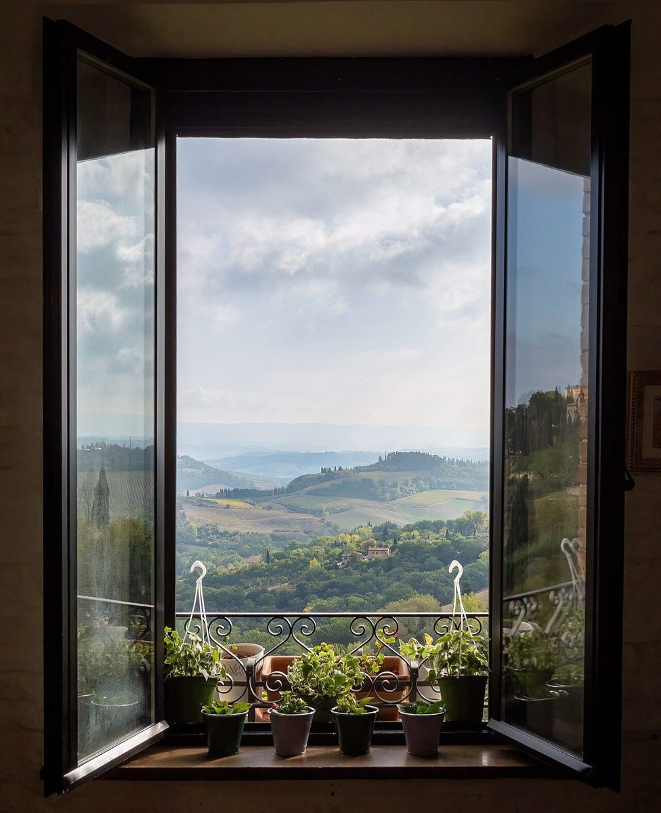

2番ホール / 店のこと
店のこと
お店について確認できているのは、所在地・電話番号・Instagramのアカウントだけです。
確認できていること
国外のイメージ(イタリア)
このページの「想像してみる」部分は、制作側が想像して書いたものです。お店の実際の様子・考え・メニューとは関係がありません。
- 店名は「Anfang」、業種はカフェ
- 所在地は和歌山県田辺市新万15-15(〒646-0014)
- 電話番号は0739-25-0876
- Instagramのアカウントは @cafe_anfang
- 営業時間・定休日・メニュー・価格・ご予約・駐車場は準備中

想像してみる

撮影地不明のイメージ 
国外のイメージ(ノルウェー) 
国外のイメージ(スウェーデン)
「Anfang」という名前から
由来は分かりません。制作側は、「始まり」という語感から、何かをはじめる前に立ち寄る場所かもしれない、と想像しました。たとえば出かける前に温かい飲み物を一杯。そんな場面を思い浮かべています(実際のお店の姿ではありません)。